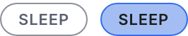
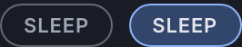

Atom
Chip
A small pill that filters a list and stays visible after it is pressed.
Anatomy
.wf-tagthe pill: uppercase at the smallest type step, a 3:1 boundary, a pill radius.wf-tag.onthe selected one: the soft accent fill AND the action coloured border
Variants and sizes
Emphasis
Two values. Selected takes a fill and a border of the action colour at the same time, and both are needed.
rest
not selected
selected
selected
The empty cells, and why they are empty
No size axis: a chip is one size everywhere, and a smaller one would fall under the touch target.
When to use it
The program library, where the operator narrows a list of programs by theme. Chips stay on screen after they are chosen, which is what separates them from a Select: the person can see what they filtered by without opening anything.
The rule, and the anti rule
Do this. Use chips when the filters are few and worth showing all at once. Keep one chip selected at all times, including the one that means everything.
Not this, use Status pill instead. Do not use a chip as a label that says something about a thing. A non interactive label is a Status pill, and it never responds to a press.
States
The selected fill measures 1.87 against the surface, below the 3:1 an identifying fill needs. That is why the selected chip also takes an action coloured border at 4.53, and why the border was changed at step 4 from transparent: the fill alone was not allowed to be the only sign.
One delta from the family. Each pair is the light theme on the left and the dark theme on the right, captured from the live component on this page, not drawn. They are re-taken by the check at step 9, which fails on a byte shift.


selectedThe named difference: two things move at once, the fill AND the border. The fill alone measures 1.87 and may not be the only sign of a state, so the border carries the 3:1. Before step 4 the border went transparent hereRe-take these with node scratchpad/states.js /tmp/jobs.json against a local server on port 8931.
Technical
| Level | 1, atom |
|---|---|
| File | design/system/components/chip.css |
| Roles it reads | --bg-accent-soft, --bg-control, --line-action, --line-control, --text-primary, --text-secondary |
| In the product | 8 of 99 screens |
| In colour | 2 screens: program-library-empty, program-library |
Markup to copy
<div class="kit-row"><button class="wf-tag on">All</button><button class="wf-tag">Stress</button><button class="wf-tag">Sleep</button><button class="wf-tag">Focus</button></div>